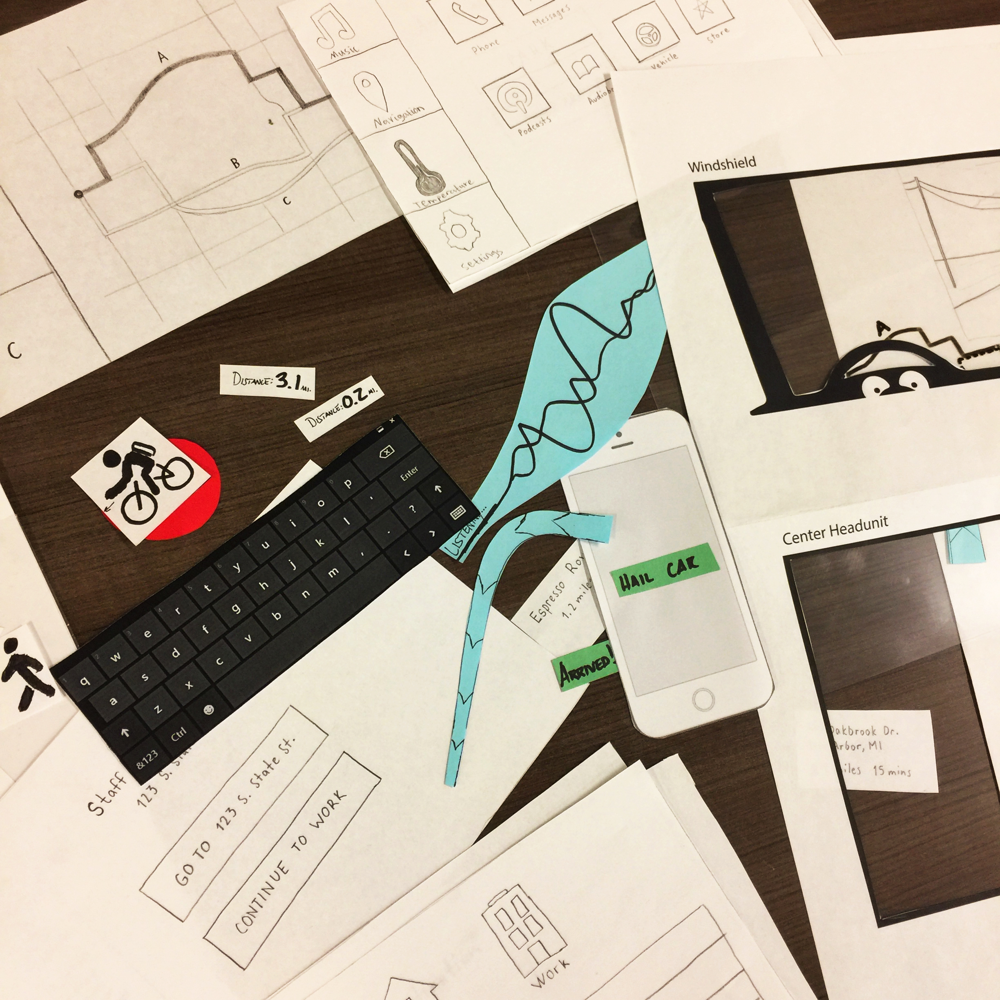

AutoMate: Autonomous Vehicle Interface
Project Type: Interaction Design
Date: September 2017 - December 2017
Role: Interaction Designer
Work Setting: Team of 5
Goal: Learn and practice the fundamental processes of interaction design
The Project
Overview
Following the structure of the CHI Design Competition 2018, our team set out to develop a product concept to engage a community that is hesitant to adopt new technologies, even when they pose as safer alternatives to the way things currently are. With this in mind, we developed, through the stages of UX research, sketching, wireframing, and prototyping, an interface for the interior of an autonomous vehicle. The mindset that we decided to take with this project was that were were building for technology that is “10 years down the road.” This was a project for the School of Information Course, SI 482 Interaction Design Studio.
Problem Definition
When thinking about the reasons behind why people are apprehensive in adopting technologies like autonomous cars, everything seemed to boil down to one core issue: trust. This was the problem we were trying to solve. How to build trust between humans and intelligent machines. Being that our specific design involved self-driving cars, we narrowed our primary trust issue to revolve around two main ideas:
1) The passenger does not know what the car sees and why it is making the decisions it is making 2) People are often more inclined to trust other people in potentially dangerous situations, like driving.
The Process
Sketching Solutions
To start ideating solutions, each member of our group sketched about 50 solutions, feasible or not. By the end of the process, we had about 250 sketches of solutions that we could go through to start deciding on ideas that we would explore further.
Competitive Analysis
After choosing a solution - an augmented reality interface paired with a console display - that we wanted to proceed with, we started researching existing solutions that would act as competitors to our solution.
Direct competitors included systems like Mercedes-Benz’s AV tech and Tesla’s Autopilot as well as other auto manufacturers’ technologies. Indirect competitors included systems such as Domino’s Autonomous Pizza Delivery cars and Starship Technologies autonomous delivery robots. Our primary use for these indirect competitors was too see how autonomous vehicles and robots interacted with pedestrians and the surrounding environment.
Personas
Our team created personas based off of a few primary user groups that we would be targeting with our product. The three user groups we identified were:
1) People over the age of 60 that are hesitant to adopt new technologies 2) People under the age of 60 that are accepting of new technologies 3) Drivers under the age of 25 that want freedom to to drive and be adventurous
The final persona that we created was an anti-persona of a pedestrian outside of the car.
The example below shows the persona that I created; a secondary persona of a mother looking to buy a car for her teen driver.
Scenarios and Storyboards
Based on the personas we created, we developed four scenarios in which each persona would interact with the autonomous vehicle and our interface.
From the scenarios, we created concise storyboards to better describe the scenarios in a visual sense and summarize the scenarios down to the core essentials.

QOC and Wireframing:
To start the design decision making process, we created simple wireframes for an augmented reality windshield display as well as constructed QOC’s (Questions, Options, Criteria) to help us better understand the design decisions we how they would ultimately affect our solution.

From these QOC’s we sketched wireframes of our options to get a better idea of how these design choices would look and feel visually.

Low fidelity Prototypes
We started the prototyping phase by creating a paper prototype of our product. Since our design involved the interior of a car, we decided to represent the two main interior aspects that we would be focusing on:
1) The windshield 2) The console

High Fidelity Prototypes
After creating our paper prototype and running a few user tests on the low fidelity prototype, we proceeded into create digital prototypes in InVision taking into account the feedback we received from our paper prototype.
Design Iterations
Version 1
The first high-fidelity digital prototype of our product was designed and constructed with Proto.io.
Version 2
Based on feedback from our version 1 prototype, we revised our design to account for issues brought up in user testing.
Issues focused around unclear interface navigation icons and unintuitive mapping between the windshield interface and the console interface.
Aside from these issues, we received numerous comments regarding how the interface (specifically, the console interface) does not seem specific to an autonomous vehicle, nor does it give comprehensive insight into what the car sees and the decisions it is making.
Version 3
Based on further feedback from our version 2 prototype, we revised our design once more to account for any issues brought up in user testing on version 2.
Issues revolved around unclear interface elements, such as using 3-dimensional rectangles to represent vehicles.
Again, points were mentioned regarding a lack of specific features to an autonomous interface. This time around, we attempted to better understand these comments.
Discussion with potential users showed that users desired features that would help them better understand exactly what the car is reacting to and why it is reacting the way it is. With this in mind, we added features to better acknowledge important road signs and stop lights, as well as acknowledge pedestrians of interest with more clarity. As smaller details, we created more clear visual representations of road lines with a cleaner, yet more informative visual interface.
The Final Product
Final Digital Prototype
The prototype consists of 4 different scenes - highway, night, rain, and urban driving environments. The user can switch between the scenes by using the arrow buttons in the top right corner. External scenarios can be activated by clicking the green buttons in the top left corner of the screens. You can click anywhere at any time to have the clickable hotspots lights up.
Note that those buttons would not be in the actual, physical vehicle interface - they are just there to interact with the digital prototype.
Interact with the final InVision prototype here.
Lessons Learned
Succeeding at Failing
This project tested our ability to learn from failing. Unfortunately, I do not believe that we took full advantage of our failing.
We designed for “10 years in the future” but did not take into account how the interior of cars, especially autonomous cars, would change in those 10 years.
- A user of one of our prototypes mentioned this idea. We acknowledged it but decided to continue with our design without taking this into account.
We used 2-dimensional prototypes for a 3-dimensional interface.
- I did some research and came across this article that gave some insight into designing and prototyping 3d interfaces.
- During our project, new technology for prototyping in virtual reality was being created for applications such as Proto.io. This would have allowed us to better prototype for a 3d environment by actually placing the user into a virtual vehicle.
We could have been more creative in our solution. It seemed as though we jumped at the low hanging fruit when coming up with a solution. Heads up displays and console displays already exist. Our solution only solved a few more issues that did not seem to be addressed by other solutions that are already on the market or in concept. This showed in our initial feedback from our professor.
- We did not capaitalize on this early feedback to create a more interesting and novel solution to our problem statement.
In the future, I would like to capitalize on my failure much more than my team and I did with this project. I knew, throughout the process, that our design did not live up to my standards. Instead of accepting defeat and gaining from feedback, we tried to subtly reshape our project to fit what we thought the professor wanted. This is obviously not a good route to take in a user-centered design world.